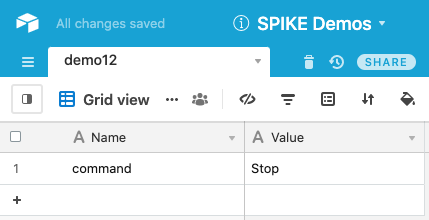
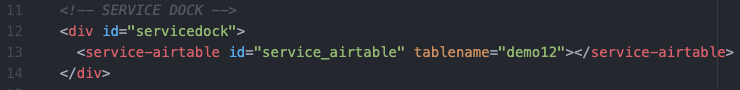
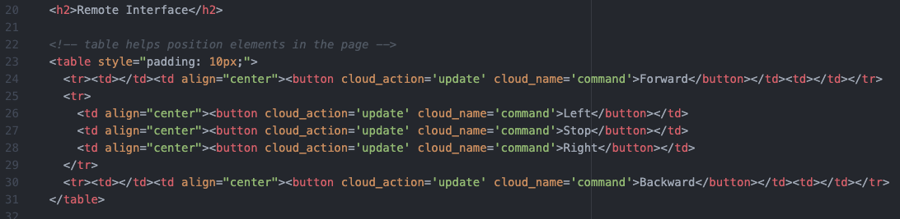
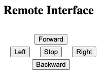
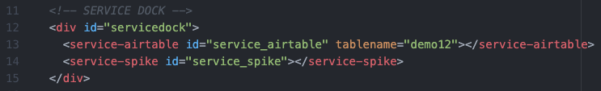
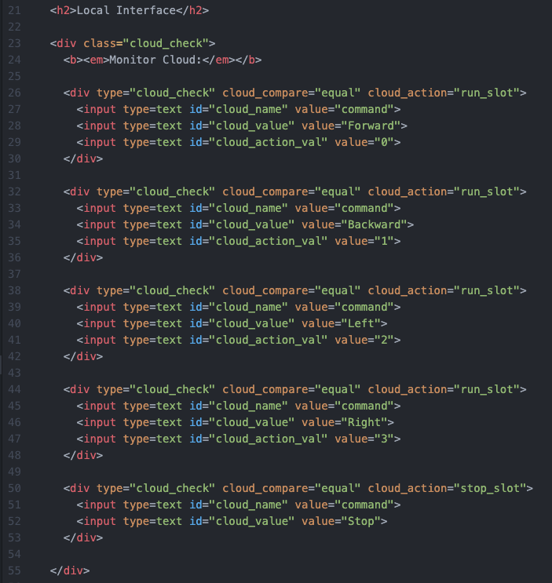
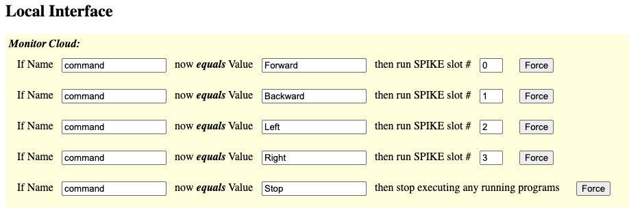

This project-demo shows how to use buttons to drive a robot.
Be sure to view the overall Documentation for configuring the cloud storage (API key, Base ID, etc) and for more information on how the entire system works.
This is the same setup as the Simple Button demo. The "Name" column has an entry "command" that will hold the updated values from the different Buttons.

Service Dock
The remote page has the Airtable Service Dock element. Make sure to update the tablename attribute to match your table name.
Remote Interface
The interface is a sequence of buttons. An HTML Table element is used to organize the buttons into a grid. Each button changes the "command" value to something different ("Forward", "Backward", "Left", "Right", "Stop").
This is what the interface will look like on the Remote Page:

Service Dock
The local page has both the Airtable Service Dock element (make sure to update the tablename attribute to match your table name). There is also a single SPIKE Prime Service Dock element.
Local Interface
The local page is monitoring the command value. A sequence of checks look for all potential values, and each is associated with a SPIKE Prime Slot.
This is how the interface will look on the Local Page:

Example Code for SPIKE Prime Hub Slot #0:
# MicroPython for LEGO Hardware (LEGO Education's SPIKE Prime) from spike import MotorPair # motors connected to A and B: my_motors = MotorPair('A','B') # Forward my_motor.start_tank(50,50)Example Code for SPIKE Prime Hub Slot #1:
# MicroPython for LEGO Hardware (LEGO Education's SPIKE Prime) from spike import MotorPair # motors connected to A and B: my_motors = MotorPair('A','B') # Backward my_motor.start_tank(-50,-50)Example Code for SPIKE Prime Hub Slot #2:
# MicroPython for LEGO Hardware (LEGO Education's SPIKE Prime) from spike import MotorPair # motors connected to A and B: my_motors = MotorPair('A','B') # Left my_motor.start_tank(-50,50)Example Code for SPIKE Prime Hub Slot #3:
# MicroPython for LEGO Hardware (LEGO Education's SPIKE Prime) from spike import MotorPair # motors connected to A and B: my_motors = MotorPair('A','B') # Right my_motor.start_tank(50,-50)